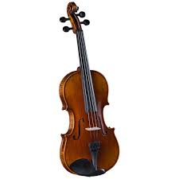
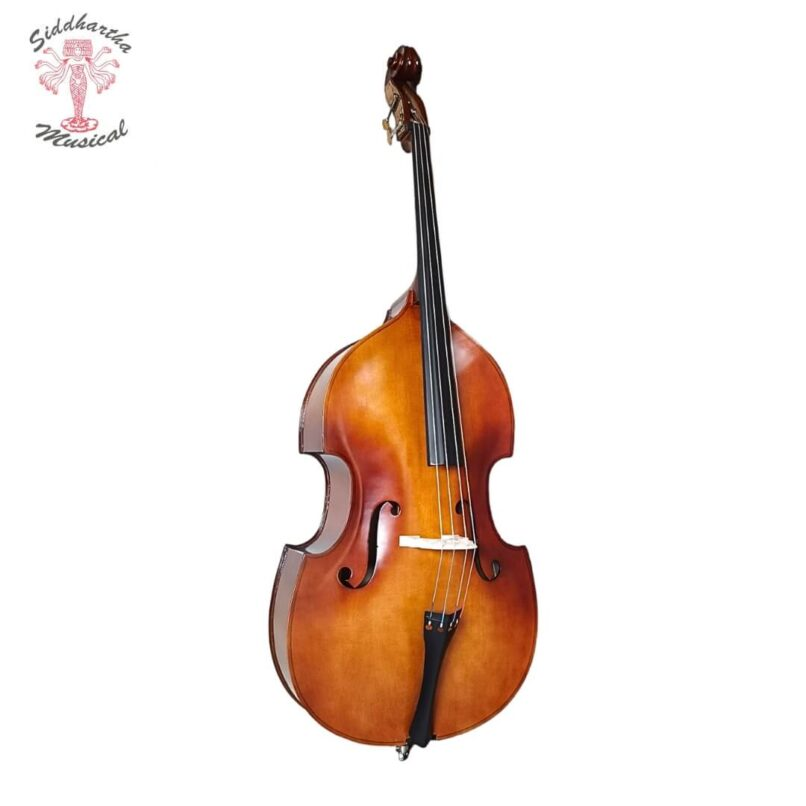

Tango
La Elegancia de la Melancolía

El tango es un suspiro en la noche, un juego de miradas y un sentimiento intenso que captura la esencia de la pasión y la tristeza entrelazadas. Con el bandoneón y el violín, el tango nos lleva a un viaje lleno de amor y melancolía.
Instrumentos Claves para el Tango
Bandoneón
Define el tango con su sonido melancólico y expresivo.

Violín
Añade dramatismo y emoción a las interpretaciones de tango.

Piano
Proporciona armonía y ritmo en las orquestas de tango.

Contrabajo
Aporta profundidad rítmica con sus líneas de bajo marcadas.
Guitarra
Ritmo y acompañamiento melódico en las primeras formaciones de tango.